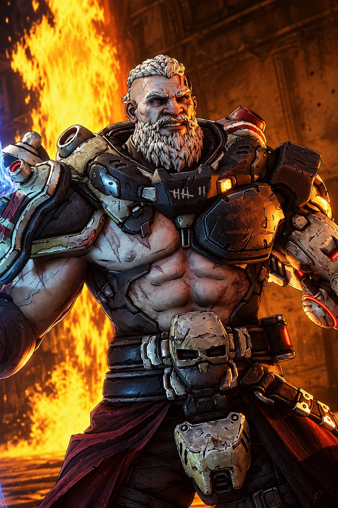
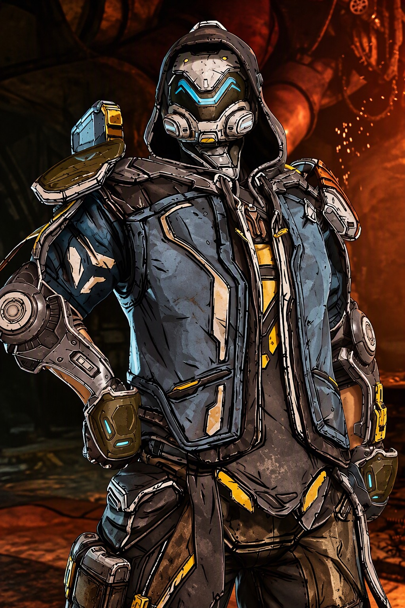
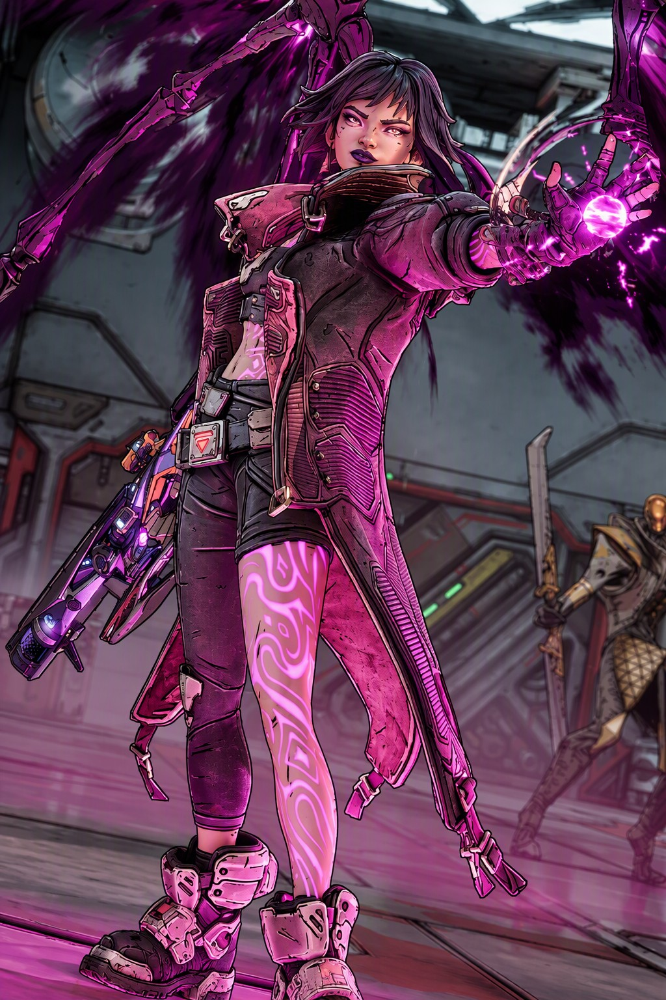

LES CHASSEURS DE L'ARCHE DE BORDERLANDS

AMON
Guerrier poète et introspectif, il incarne la classe de la Brute / Tank. C'est un combattant de première ligne ultra-résistant spécialisé dans le combat rapproché, le contrôle et le bi-élémentaire (Feu et Glace).
Passé : Seul survivant d'un culte qui vénérait les monstres de l'Arche sur sa planète natale Perium, il a vu ses proches se faire décimer lorsque l'Arche s'est ouverte. Il consacre désormais sa vie à traquer et éliminer ces créatures.
Amon est un colosse (mesurant plus de 2,25 m) qui combine une énorme capacité d'encaissement avec un arsenal d'armes de forgeron (marteau, haches, bouclier) déployées par des drones de combat. Sa mécanique unique, le Talent de Forgeron, lui permet de déclencher une compétence secondaire (ou version "forgée") dépendante de sa compétence d'action principale.

RAFA
Il incarne la classe traditionnelle du soldat chevronné et polyvalent, mais réinventée à travers un arsenal technologique virtuel et une armure de combat suréquipée.
Né dans la ceinture d'astéroïdes "The Seam", Rafa a grandi en microgravité, ce qui a atrophié ses muscles et sa densité osseuse. Pour explorer la galaxie, il a rejoint la corporation militaire Tediore qui l'a équipé d'une exo-combinaison Deadframe. Réalisant que son contrat n'avait pas de fin et qu'il était condamné à servir, il a déserté. Il vit désormais selon une philosophie insouciante (style "YOLO"), traqué par son ancienne entreprise.
Rafa est un combattant extrêmement équilibré et accessible. Sa mécanique passive, Overdrive (Surcharge), augmente automatiquement ses dégâts et sa vitesse de mouvement tant qu'une compétence d'action est active.

VEX
Elle revisite la classe traditionnelle des Sirènes en y injectant des mécaniques d'invocatrice/nécromancienne et de magie eldritch.
Ancienne employée de commerce sur la planète Cretia, ses pouvoirs de Sirène se sont éveillés brutalement lors d'un stress intense pendant des soldes particulièrement sanglantes. Elle arpente désormais la planète Kairos.
Son passif Alliance phasique (Phase Covenant) adapte automatiquement le type élémentaire de toutes ses compétences d'action et de ses attaques de mêlée à l'élément de l'arme qu'elle tient en main.